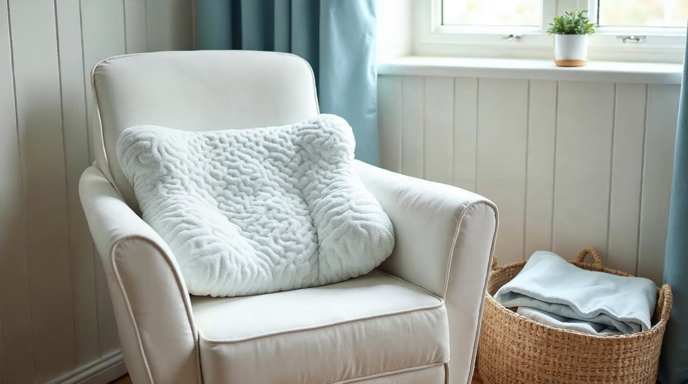
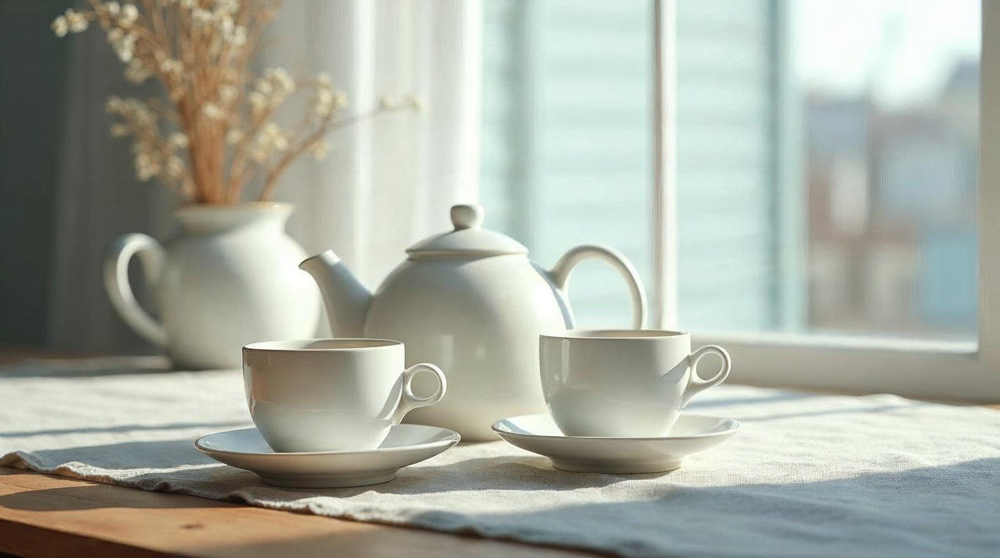
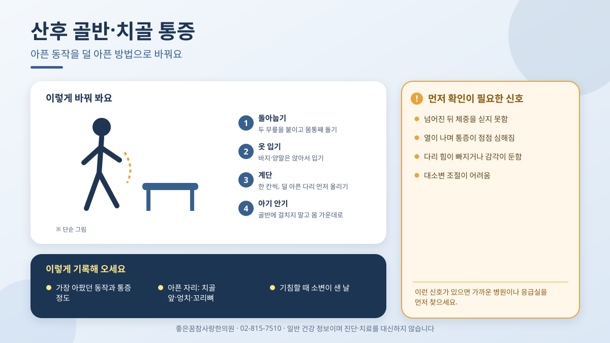

이종호 한의사 감수좋은꿈참사랑한의원 대표원장 (한의사 면허번호 19769)발행 2026-11-26 · 수정 2026-11-26
이 글의 차례
새벽 수유를 하려고 침대에서 몸을 돌리는 순간, 다리 사이 앞쪽 뼈가 찌릿하게 아파 숨이 멎습니다. 한쪽 다리로 서서 바지를 입기도 어렵고, 아기를 안고 계단을 내려갈 때는 골반 뒤쪽이 덜컥 빠지는 것 같은 느낌이 듭니다. 출산하고 나면 괜찮아질 줄 알았는데 오히려 더 신경 쓰입니다.
진료실에서 이런 이야기를 꺼내시는 분들은 대개 출산하면 다들 이 정도는 아프다고 들었다며 한참을 참다가 오십니다. 아기를 돌보느라 병원에 갈 틈도 없고, 아프다고 말하기도 미안해서요. 그 사이 통증을 피하려고 이상한 자세로 움직이다 허리와 엉덩이까지 아파지는 경우가 많습니다.
출산 뒤 골반과 치골 통증은 흔한 불편이지만, 흔하다고 참기만 할 일은 아닙니다. 어떤 동작이 아프고 왜 아픈지를 알면 덜 아프게 움직이는 방법이 보이고, 회복도 한결 편해집니다.
이 글에서는 산후 골반·치골 통증이 어떻게 나타나는지, 왜 생기는지, 비슷한 다른 통증과 어떻게 나누어 보는지, 그리고 생활에서 무엇을 바꾸고 한의원에서는 무엇을 함께 살피는지 차례로 정리했습니다.
산후 골반·치골 통증은 어떻게 나타나나요?
가장 흔한 곳은 두 다리 사이 앞쪽, 치골이 만나는 가운데 자리입니다. 걸을 때 찌릿하거나, 한쪽 다리로 설 때, 다리를 벌릴 때 아픕니다. 누워서 돌아누울 때 '뚝' 하는 느낌과 함께 통증이 오기도 합니다.
골반 뒤쪽, 엉덩이 위 양옆의 엉치 부위가 아픈 분도 많습니다. 오래 서 있거나 아기를 안고 걸을 때 묵직하게 아프고, 한쪽으로 체중을 실으면 더 불편합니다. 엉덩이와 허벅지 뒤쪽으로 뻗치듯 아프기도 합니다.
꼬리뼈 쪽이 아파 앉기 힘들다고 하시는 분도 있습니다. 분만 때 아기 머리가 지나가며 꼬리뼈 주변이 눌리거나 늘어나면서 생기는 경우가 많고, 딱딱한 의자에 앉거나 앉았다 일어설 때 특히 불편합니다.
이런 통증은 출산 뒤 몇 주에 걸쳐 차츰 줄어드는 경우가 많지만, 임신 중부터 아팠던 분이나 아기를 안고 무리하는 분은 몇 달 넘게 이어지기도 합니다. 생리가 다시 시작될 무렵이나 수유를 마칠 무렵 달라졌다고 말씀하시는 분도 있습니다.
왜 출산 뒤에 골반과 치골이 아플까요
임신 중에는 아기가 나올 길을 마련하기 위해 골반을 잇는 인대가 부드럽게 느슨해집니다. 이 변화는 출산 뒤 바로 원래대로 돌아가지 않고 몇 달에 걸쳐 천천히 단단해집니다. 그 사이 골반 관절은 평소보다 덜 안정된 상태로 체중을 받습니다.
분만 과정에서 골반 관절은 아기가 지나갈 만큼 벌어졌다가 다시 모입니다. 아기 머리가 지나가며 치골 결합 부위와 꼬리뼈 주변이 늘어나고, 다리를 벌린 자세로 오래 힘을 주면 골반 주변 근육과 인대가 지칩니다. 제왕절개로 출산했더라도 임신 기간 동안 무게를 버틴 부담은 남아 있습니다.
출산 뒤의 생활이 여기에 더해집니다. 아기를 한쪽 골반에 걸쳐 안는 습관, 바닥에 앉아 기저귀를 갈고 일어서는 동작, 수유하며 다리를 꼬거나 한쪽으로 기대 앉는 자세가 매일 수십 번 반복됩니다. 배와 골반 아래 근육이 아직 약한 시기라 관절이 받는 부담이 더 큽니다.
한의학에서는 출산 뒤를 기운과 혈이 크게 쓰여 근육과 인대를 받쳐 줄 힘이 약해진 때로 봅니다. 찬 바닥에 오래 앉거나 찬바람을 쐬면 골반 주변이 더 뻣뻣하고 시리다고 느끼시는 것도 이 흐름으로 이해합니다.
허리 통증이나 다른 통증과는 어떻게 다를까요?
허리 디스크 때문에 생기는 통증은 허리에서 엉덩이, 다리 뒤쪽을 따라 무릎 아래까지 저리게 내려가는 경우가 많습니다. 기침이나 재채기를 할 때 다리로 뻗치는 통증이 심해지거나, 다리 감각이 무뎌진다면 허리 쪽을 먼저 봅니다.
골반 통증은 대개 치골 앞이나 엉치 뒤쪽 한 자리에 머물고, 한쪽 다리로 서거나 다리를 벌리는 동작, 돌아눕는 동작에서 뚜렷해집니다. 저림보다는 찌릿함, 묵직함, 빠지는 느낌으로 표현하시는 경우가 많습니다.
사타구니 깊은 곳이 아프고 양말을 신거나 다리를 들어 올릴 때 불편하다면 고관절 쪽을 함께 봅니다. 출산 뒤에 드물게 고관절 주변 문제가 생기기도 하므로, 걷기 힘들 정도로 통증이 점점 심해지면 정형외과 검사가 먼저입니다.
몸을 따뜻하게, 쉬는 자리를 편하게
골반 주변은 찬 기운에 예민해지기 쉬운 자리입니다. 찬 바닥에 오래 앉아 있으면 엉치와 꼬리뼈 쪽이 더 뻣뻣해진다고 말씀하시는 분이 많습니다. 바닥에 앉을 일이 많다면 방석을 두툼하게 깔고, 겨울에는 허리와 엉덩이를 덮는 옷을 입으세요.
따뜻한 물로 샤워하며 엉덩이와 허리 아래쪽을 천천히 데우는 것도 근육을 느슨하게 하는 데 도움이 됩니다. 다만 출산 직후 오로가 나오는 시기에는 욕조에 몸을 담그기보다 샤워를 권하고, 탕 목욕은 산부인과 검진 뒤에 상의하세요.
꼬리뼈 쪽이 아픈 분은 가운데가 뚫린 도넛 모양 방석이나, 엉덩이 뒤쪽을 살짝 띄워 주는 방석을 써 보세요. 앉을 때 몸을 조금 앞으로 기울이면 꼬리뼈에 실리는 무게가 줄어듭니다.
다시 운동을 시작할 때 살필 것
통증이 줄고 일상이 편해지면 운동을 다시 시작하고 싶어집니다. 그때는 걷기부터 시작해 시간을 조금씩 늘리고, 걷고 난 다음 날 치골이나 엉치가 다시 아프지 않은지 확인하며 한 단계씩 올라갑니다.
뛰기, 점프, 다리를 넓게 벌리는 동작, 한쪽 다리로 버티는 운동은 골반에 부담이 큽니다. 다음 날까지 통증이 남지 않을 때 짧게 시작하고, 기침할 때 소변이 새는 느낌이 남아 있다면 골반 아래 근육 운동을 먼저 충분히 하세요.
먼저 이렇게 여쭙니다
처음 오시면 저는 대략 이런 순서로 여쭙니다. 미리 생각해 오시면 이야기가 훨씬 수월해집니다.
- 출산은 언제, 어떤 방법으로 하셨나요? 분만 시간은 길었나요?
- 임신 중에도 골반이나 치골, 허리가 아팠나요?
- 아픈 곳은 치골 앞, 엉치 뒤, 꼬리뼈 가운데 어디인가요?
- 걷기, 계단, 돌아눕기, 한 다리로 서기 가운데 무엇이 가장 아픈가요?
- 아기는 주로 어느 쪽으로 안으시고, 수유는 어떤 자세로 하시나요?
- 기침할 때 소변이 새거나 아랫배가 묵직한 느낌이 있나요?
모든 질문에 정확히 답하지 못하셔도 괜찮습니다. 가장 아픈 동작 하나만 정확히 알려 주셔도 진찰의 방향이 훨씬 분명해집니다.
산부인과 검진에서 들은 이야기, 출산 뒤 진통제를 얼마나 드셨는지, 수유 중인지도 함께 여쭙니다. 수유 중이시면 드시는 진통제를 확인하고, 한약을 정할 때도 함께 고려해야 하기 때문입니다.
일상에서 먼저 해 볼 수 있는 것
골반 통증이 있을 때는 아픈 동작을 억지로 견디기보다 덜 아픈 방법으로 바꾸는 것이 먼저입니다. 몇 가지 동작만 바꿔도 하루의 통증이 꽤 줄어듭니다.
- 돌아누울 때는 두 무릎을 붙인 채 몸통과 함께 통째로 돌기
- 옆으로 누울 때 무릎 사이에 베개 하나 끼우기
- 바지나 양말은 서서 입지 말고 앉아서 입기
- 계단은 한 칸씩, 덜 아픈 다리를 먼저 올리고 아픈 다리를 먼저 내리기
- 아기는 한쪽 골반에 걸치지 말고 몸 가운데로 안기
- 다리를 꼬거나 한쪽으로 기대 앉는 자세 피하기
차에서 내릴 때는 엉덩이를 먼저 문 쪽으로 돌려 앉은 뒤 두 다리를 함께 밖으로 내립니다. 한 다리씩 벌려 내리면 치골이 당기기 쉽습니다. 침대에서 일어날 때도 옆으로 돌아누운 다음 팔로 밀며 두 다리를 함께 내리세요.
수유 자세는 등받이가 있는 의자에 깊숙이 앉아 두 발을 바닥에 평평하게 두고, 수유 쿠션으로 아기 높이를 맞춥니다. 바닥에 양반다리로 앉아 오래 수유하면 골반이 벌어진 채 버티게 되어 통증이 심해지기 쉽습니다.
골반 벨트는 통증이 심한 시기에 잠시 도움이 된다고 느끼는 분이 있습니다. 쓰신다면 엉덩이뼈 바로 아래 높이에 너무 세지 않게 두르고, 움직일 때 위주로 쓰시길 권합니다. 하루 종일 세게 조이는 것은 숨과 순환을 답답하게 합니다.
통증이 조금 가라앉으면 골반 아래 근육과 엉덩이 근육을 깨우는 작은 운동을 시작합니다. 누워서 무릎을 세우고 숨을 내쉬며 골반 아래를 살짝 조였다 풀기, 두 무릎 사이에 쿠션을 끼우고 가볍게 눌렀다 풀기처럼 아프지 않은 범위에서 하는 동작부터입니다.

아기를 돌보는 동작, 이렇게 바꿔 보세요
기저귀 갈이는 바닥보다 허리 높이의 기저귀 갈이대나 침대 끝에서 하시길 권합니다. 바닥에서 할 때는 무릎을 꿇고 앉아 몸을 숙이기보다, 아기를 내 무릎 가까이로 당겨서 등을 세운 채로 합니다.
아기를 안아 올릴 때는 허리를 굽히지 말고 무릎을 굽혀 아기를 내 몸 가까이 붙인 뒤 다리 힘으로 일어섭니다. 아기 띠를 쓰신다면 아기가 몸 가운데에 오도록 끈을 맞추고, 한쪽으로만 메는 슬링은 오래 쓰지 않는 것이 좋습니다.
유모차는 손잡이 높이를 내 배꼽 높이 정도로 맞추면 허리와 골반이 덜 숙여집니다. 언덕길에서는 보폭을 줄이고 천천히 밀고, 내리막에서는 몸을 유모차 쪽으로 기울이지 말고 뒤로 살짝 버티며 내려갑니다.
한의원에서 함께 살필 수 있는 경우
- 출산 뒤 치골 앞이 찌릿해 걷기나 돌아눕기가 힘든 경우
- 엉치 뒤쪽이 묵직하고 아기를 안고 서 있으면 더 아픈 경우
- 꼬리뼈 쪽이 아파 앉고 일어서기가 불편한 경우
- 골반 통증을 피하려다 허리와 엉덩이, 무릎까지 아파진 경우
- 찬 바닥이나 찬바람에 골반 주변이 더 뻣뻣하고 시린 경우
좋은꿈참사랑한의원에 오시면 먼저 맥을 짚고, 아픈 동작과 아픈 자리를 하나씩 확인합니다. 필요하다고 판단되면 초음파로 주변 힘줄과 인대를 살펴보고, 뼈나 고관절 검사가 먼저 필요해 보이면 정형외과 진료를 권합니다.
진찰한 내용을 바탕으로 생활에서 바꿔 볼 동작 하나를 함께 정하고, 침이나 추나, 한약 상담 가운데 지금 상태에 맞는 것을 고릅니다. 출산 뒤 인대가 느슨한 시기에는 강한 교정보다 부드러운 방법을 먼저 고려합니다. 한약은 수유 중인지, 드시는 약을 모두 확인한 뒤 신중하게 정합니다.
다음 임신 가능성이 있거나 계획 중이시라면 먼저 알려 주세요. 그럴 때는 산부인과와 상의한 뒤 진료 방향을 정합니다. 산부인과에서 받은 약은 상의 없이 멈추지 않습니다.
이렇게 기록해 오시면 상담이 쉬워집니다
골반 통증은 동작에 따라 크게 달라집니다. 일주일 정도만 간단히 적어 보세요.
- 가장 아팠던 동작과 그때의 통증 정도(0~10)
- 아픈 자리: 치골 앞, 엉치 뒤, 꼬리뼈
- 아기를 오래 안았거나 많이 걸었던 날
- 밤에 돌아누울 때 깬 횟수
- 기침할 때 소변이 샌 날
- 드신 진통제와 시각
기록을 나란히 놓고 보면 어떤 동작이 몸을 가장 힘들게 하는지가 보이기 시작합니다. 통증 정도는 정확하지 않아도 괜찮습니다. 어제보다 나은지, 비슷한지, 더 아픈지만 적어도 흐름은 충분히 보입니다. 그 동작 하나를 바꾸는 것이 다음 걸음이 됩니다.

참지 말고 말씀해 주세요
출산 뒤 골반 통증은 흔하지만, 흔하다고 혼자 참아야 하는 통증은 아닙니다. 덜 아프게 움직이는 방법을 일찍 익히면 허리와 무릎까지 번지는 것을 줄일 수 있습니다.
가족에게도 지금 어떤 동작이 아픈지 알려 주세요. 바닥에 놓인 아기 용품을 들어 올리는 일, 장바구니를 옮기는 일, 밤중에 아기를 안고 일어나는 일을 잠시 나누어 맡아 주기만 해도 골반이 쉬어 갈 틈이 생깁니다. 아픈 것을 말하는 것도 회복의 한 부분입니다.
이번 주에는 돌아눕는 방법 하나, 혹은 아기를 안는 방향 하나만 바꿔 보세요. 다음에 오시면 일주일의 기록부터 함께 펼쳐 보겠습니다.
이런 증상은 먼저 확인이 필요합니다
- 넘어진 뒤 체중을 전혀 싣지 못하는 경우, 열이 나거나 골반 통증이 점점 심해지는 경우
- 다리 힘이 갑자기 빠지는 경우, 엉덩이·사타구니 감각이 둔해지거나 소변·대변을 갑자기 가리기 어려운 경우
이런 신호가 있으면 한의원보다 가까운 병원이나 응급실을 먼저 찾으세요.
함께 읽으면 좋은 글
- 임신 중 허리와 골반, 치골이 아플 때는 무엇을 살피고 생활은 어떻게 하나요?
- 출산 뒤 몸 회복, 관절·땀·잠·기분은 무엇부터 살피나요?
- 허리 아래 엉치 한쪽이 콕 찌르듯 아픈 천장관절 통증은 어떻게 살피나요?
- 앉을 때마다 엉덩이 맨 아래 꼬리뼈가 찌릿한 꼬리뼈 통증은 어떻게 살피나요?
- 기침할 때 새거나 화장실까지 참기 힘든 요실금, 복압성과 절박성은 어떻게 나눠 살피나요?

여쭙는 것
- 출산은 언제, 어떤 방법으로 하셨나요? 분만 시간은 길었나요?
- 임신 중에도 골반이나 치골, 허리가 아팠나요?
- 아픈 곳은 치골 앞, 엉치 뒤, 꼬리뼈 가운데 어디인가요?
생활에서 해 볼 것
- 돌아누울 때는 두 무릎을 붙인 채 몸통과 함께 통째로 돌기
- 옆으로 누울 때 무릎 사이에 베개 하나 끼우기
- 바지나 양말은 서서 입지 말고 앉아서 입기
한의원에서 함께 살필 것
- 출산 뒤 치골 앞이 찌릿해 걷기나 돌아눕기가 힘든 경우
- 엉치 뒤쪽이 묵직하고 아기를 안고 서 있으면 더 아픈 경우
- 꼬리뼈 쪽이 아파 앉고 일어서기가 불편한 경우
먼저 확인이 필요한 신호
- 넘어진 뒤 체중을 전혀 싣지 못하는 경우, 열이 나거나 골반 통증이 점점 심해지는 경우
- 다리 힘이 갑자기 빠지는 경우, 엉덩이·사타구니 감각이 둔해지거나 소변·대변을 갑자…
한눈에 보는 표
| 구분 | 핵심 |
|---|---|
| 여쭙는 것 | 출산은 언제, 어떤 방법으로 하셨나요? 분만 시간은 길었나요? 임신 중에도 골반이나 치골, 허리가 아팠나요? |
| 생활에서 해 볼 것 | 돌아누울 때는 두 무릎을 붙인 채 몸통과 함께 통째로 돌기 옆으로 누울 때 무릎 사이에 베개 하나 끼우기 |
| 한의원에서 함께 살필 것 | 출산 뒤 치골 앞이 찌릿해 걷기나 돌아눕기가 힘든 경우 엉치 뒤쪽이 묵직하고 아기를 안고 서 있으면 더 아픈 경우 |
| 먼저 확인이 필요한 신호 | 넘어진 뒤 체중을 전혀 싣지 못하는 경우, 열이 나거나 골반 통증이 점점 심해지는 경우 다리 힘이 갑자기 빠지는 경우, 엉덩이·사타구니 감각이 둔해지거나 소변·대변을 갑자기 가리기 어려운 경우 |
자주 묻는 질문
출산 뒤 골반 통증은 얼마나 가나요?
몇 주에 걸쳐 차츰 줄어드는 경우가 많지만, 임신 중부터 아팠거나 아기를 안고 무리하는 분은 몇 달 넘게 이어지기도 합니다. 덜 아프게 움직이는 방법을 일찍 익히면 회복이 한결 편해집니다.
출산 뒤 골반이 틀어졌다는데 추나를 받아야 하나요?
틀어짐이라는 말보다 어느 동작이 아픈지를 먼저 확인합니다. 출산 뒤 인대가 느슨한 시기에는 강한 교정보다 부드러운 방법을 먼저 고려하고, 진찰한 뒤 추나가 맞는지 함께 정합니다.
수유 중인데 진통제나 한약을 먹어도 되나요?
진통제는 처방한 산부인과나 약국에 수유 중이라고 알리고 상의해 주세요. 한약은 진찰 뒤 수유 중이라는 것과 드시는 약을 모두 확인해 신중하게 정하고, 필요하면 산부인과와도 상의하시도록 안내합니다.
제왕절개를 했는데도 치골이 아플 수 있나요?
네, 임신 기간 동안 골반 인대가 느슨해지고 무게를 버틴 것은 같기 때문에 생길 수 있습니다. 진료실에서는 출산 방법과 상관없이 아픈 동작을 하나씩 확인합니다.
좋은꿈참사랑한의원은 재진 때 지난번 이야기부터 이어서 여쭙니다. 진료시간과 예약은 오시는 길에서 확인하세요.
어디서 상담받을 수 있나요?
좋은꿈참사랑한의원은 서울 동작구 만양로2길 2 신성빌딩 3층·5층(서울 동작구 상도동, 7호선 상도역 3번 출구 근처)에 있습니다. 한의사 3명(이종호 대표원장, 조영기 수석진료원장, 정원영 진료원장)이 진료합니다. 진료시간은 평일 09:30~20:00(점심 13:00~14:00), 토·일·공휴일 09:30~15:00이며, 방문 전 전화로 확인을 권합니다. 예약은 네이버 예약, 카카오톡 상담, 전화 02-815-7510로 받습니다.
이 글은 일반적인 건강 정보이며 개인의 진단이나 치료를 대신하지 않습니다. 증상이 있거나 복용 중인 약이 있다면 진료를 통해 확인하세요. 치료 효과는 개인마다 다를 수 있습니다.
작성 기준: 일반적으로 알려져 있는 건강 정보를 참고해 정리했습니다(대표원장 감수). 증상 기록은 1~2주 동안 하루 1회, 비슷한 시간에 적어 오시면 지난 상태와 비교하기 쉽습니다.